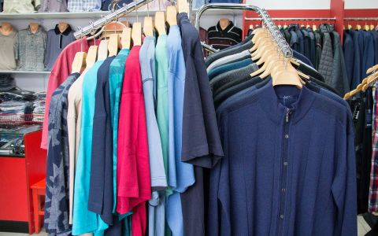

Welcome to drabužiai
DRUČKIAI – Didelių dydžių drabužių parduotuvė
2020.10.28 07:54Dručkiai Istorija Privatumo politika Slapukų politika Moterims Mona Lisa Verpass Flare Alpacana Godske group Chalou KJ Brand Loft Mat Fashion Coom design Version Lebek Transparente AKH Fashion Tia Fend Fashion Cero Etage Vyrams Pionier Jeans & Casuals Pierre Cardin Jupiter Shirt Haupt Atelier Torino Cabano Clipper Digel Canson Lindenmann Naujienos Kontaktai Ekstra! Daugiau DRUČKIAI Didelių dydžių parduotuvė Vyrams MOTERIMS SKAMBINKITE
Dručkiai
Didelių dydžių parduotuvės TarptautiniaiPARTNERIAI PREKIŲ ŽENKLAI
Garsiausius prekių ženklus galite išvysti mūsų parduotuvėse, kurios yra Klaipėdoje bei Vilniuje. Esame kompanija siūlanti platų didelių drabužių asortimentą. Esame Lietuvoje pirmieji kurie pradėjo prekybą šios kategorijos drabužiais.
“DRUČKIAI”
Vyrams MoterimsSPECIALŪS PASIŪLYMAI TIK JUMS
Mes turime įvairių dydžių drabužius
Vyriški drabužiai
Didelių dydžių drabužiai vyrams (DYDŽIAI 58 80 EUROPIETIŠKO DYDŽIO)
Stilingi Rūbai Vyrams .
Dideli dydžiai vyrams: čia rasite drabužius apkūniems vyrams. Šioje kategorijoje talpinami rūbai nuo 58 80 dydžio. Pirkite didelių dydžių prekes mūsų parduotuvėse sostinėje bei pajūryje
Moteriški drabužiai
Didelių dydžių drabužiai moterims (44 70 EUROPIETIŠKO DYDŽIO)
DRUČKIAI parduotuvė sukurta kiekvienai moteriai, kuri susiduria su aprangos iššūkiais. Kostiumėliai, suknelės, švarkeliai, palaidinės, kelnės, aksesuarai visa tai Jums. Galite atrodyti gražiai ir stilingai. Nerandate sau tinkamų? Užsukite į mūsų parduotuves. Atraskite tai, kas tinka Jums!
Naujienos
Geriausios naujienos visiems metams!
Pristatome naujausios mados tendencijas Jūsų malonumui.
Mūsų istorija
Daugiau apie mus Sostinėje bei pajūryjeVilniuje bei Klaipėdoje
Mus rasti paprasta. Parduotuvės adresu:
VILNIUS: Pylimo g. 27
KLAIPĖDA: Taikos pr. 19
KONTAKTAIMOTERIMS
VYRAMS
Tai kas madinga2019 Kolekcijos
Reguliariai vykstame į įvairias tarptautines parodas iš kurių semiamės idėjų. Gauname madingas naujas kolekcijas, kurias siūlome išbandyti ir išreikšti save 2019 metais
NoriuSusisiekite per Facebook
This message is only visible to admins.
Problem displaying Facebook posts. Backup cache in use.
Click to show error
Type: OAuthException
+37069926991
info@druckiai.eu
Klaipėda: Taikos pr. 19 Vilnius: Pylimo g. 27
Visos teisės saugomos 2018 - www.druckiai.eu
Kviečiame Jus atvykti Klaipėdoje ir Vilniuje
+37069926991
info@druckiai.eu
Slapukų politika
Šioje svetainėje naudojame slapukus (angl. „cookies“). Jie padeda atpažinti prisijungusius vartotojus, matuoti auditorijos dydį ir naršymo įpročius; taip mes galime keisti svetainę, kad ji būtų jums patogesnė. Slapukų nustatymai Sutinku Privatumo & Slapukų politika CloseSlapukų politikos apžvalga
Slapukais vadinami informacijos elementai, perkeliami iš interneto svetainės į jūsų kompiuterio standųjį diską. Tai nedideli informacijos failai, kurie leidžia interneto svetainėms išsaugoti ir vėl pasiekti informaciją apie naudotojo naršymo įpročius. Slapukus naudoja dauguma interneto svetainių, nes jie yra viena iš daugybės priemonių, kurios padeda pritaikyti interneto turinį prie naudotojų poreikių. Slapukai leidžia interneto svetainėms teikti prie naudotojų poreikių pritaikytas paslaugas. Slapukų būna skirtingų: laikinieji slapukai (arba seanso slapukai) – pašalinami, kai užveriama naršyklė; nuolatiniai slapukai – nepašalinami ir lieka tol, kol pašalinami aktyviais veiksmais arba kol baigiasi jų galiojimas. Necessary Necessary Always EnabledNecessary cookies are absolutely essential for the website to function properly. This category only includes cookies that ensures basic functionalities and security features of the website. These cookies do not store any personal information.
Non-necessary Non-necessaryAny cookies that may not be particularly necessary for the website to function and is used specifically to collect user personal data via analytics, ads, other embedded contents are termed as non-necessary cookies. It is mandatory to procure user consent prior to running these cookies on your website.
